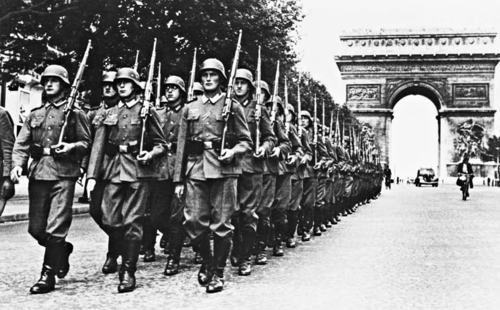
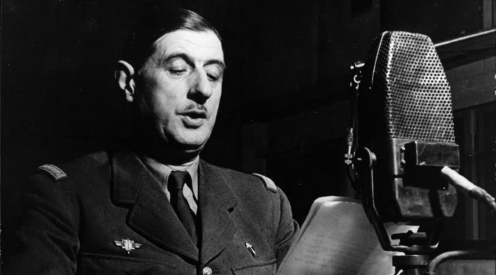
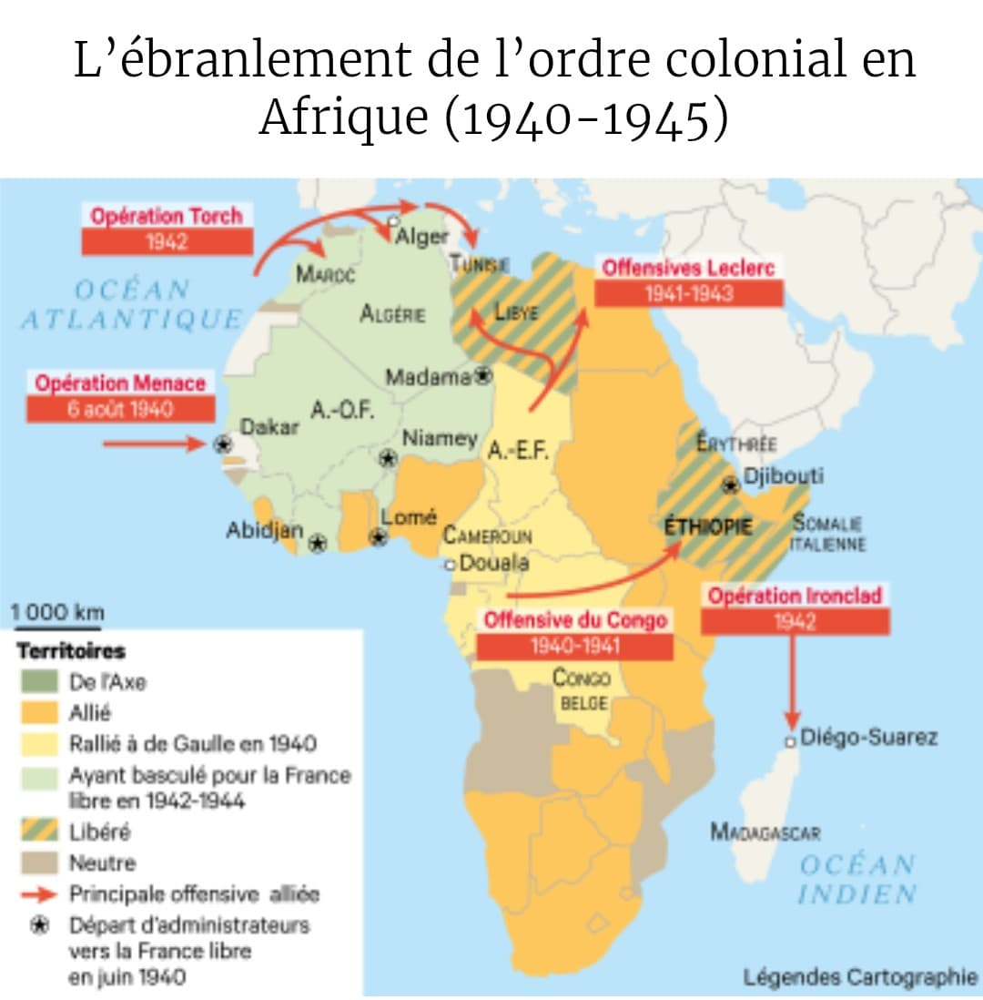

L’Allemagne envahit la France (mai–juin 1940)

Au printemps 1940, l’armée allemande lance une offensive rapide à travers la Belgique et le nord de la France. Les lignes françaises sont contournées, l’armée est prise à revers et de nombreuses unités sont encerclées. En quelques semaines, la situation militaire devient catastrophique : les troupes reculent, les civils fuient, et le gouvernement perd le contrôle des événements.
Paris est déclarée ville ouverte pour éviter sa destruction. Le gouvernement, dépassé, cherche une issue. Deux choix s’opposent : accepter l’armistice ou continuer le combat.
Pétain : armistice et collaboration


Le maréchal Pétain, héros de 1916, devient chef du gouvernement en juin 1940. Il choisit de demander l’armistice, signé le 22 juin. La France est coupée en deux : une zone occupée par l’Allemagne et une zone « libre » administrée depuis Vichy.
Très vite, Pétain engage la France dans une politique de collaboration d’État avec l’Allemagne nazie : discours officiels, rencontres diplomatiques, participation à la politique antisémite. Cette collaboration oppose frontalement Vichy à ceux qui refusent la défaite.
▶ Vidéo – Annonce officielle de la collaboration (Montoire, 1940)Maréchal Pétain – Fiche complète
De Gaulle appelle à la résistance (18 juin 1940)

À l’inverse de Pétain, le général Charles de Gaulle refuse l’armistice. Parti à Londres, il obtient de la BBC la possibilité de s’adresser aux Français. Le 18 juin 1940, il prononce un appel historique : la France a perdu une bataille, mais elle n’a pas perdu la guerre.
Il invite les soldats, marins, aviateurs, ingénieurs et ouvriers à le rejoindre pour continuer le combat. Cet appel fonde la France Libre, qui devient la voix officielle de la résistance extérieure.
▶ Vidéo – Appel du 18 juin 1940Charles de Gaulle – Fiche complète
Ceux qui se rallient à la France Libre

Malgré l’armistice, des hommes et des territoires refusent la défaite et rejoignent De Gaulle. Ce ralliement donne une réalité militaire et politique à la France Libre.
• Amiral Émile Muselier – Chef des Forces Navales Françaises Libres (FNFL) • Général Koenig – Commandant de la 1re DFL, héros de Bir Hakeim • Général Leclerc – Chef de la 2e DB, futur libérateur de Paris • Territoires de l’Empire – Tchad, Cameroun, AEF, Nouvelle-Calédonie, Polynésie.
Amiral Émile Muselier – FNFL
Général Koenig – Bir Hakeim & 1re DFL
Maréchal Leclerc – 2e DB & Libération de Paris
La Résistance intérieure : un soutien décisif

La France Libre ne peut réellement peser dans la guerre que grâce à l’action de la Résistance intérieure. Dans la France occupée, des milliers d’hommes et de femmes s’organisent clandestinement pour combattre l’occupant nazi et le régime de Vichy.
La Résistance fournit aux Alliés des renseignements essentiels : positions allemandes, mouvements de troupes, plans de défense, cartes et messages codés. Elle mène aussi des sabotages : voies ferrées détruites, dépôts incendiés, lignes coupées.
À partir de 1943, les réseaux clandestins reconnaissent De Gaulle comme leur chef politique, donnant à la France Libre une légitimité nationale. Cette union forme la France Combattante, réunissant les forces extérieures et les combattants de l’intérieur.
En 1944, la Résistance déclenche des insurrections locales et libère plusieurs villes avant l’arrivée des Alliés. À Paris, l’insurrection du 19 août 1944 prépare l’entrée de la 2e DB du général Leclerc.
La Libération de Paris (25 août 1944)

En août 1944, après le débarquement en Normandie, les troupes alliées progressent vers Paris. La Résistance intérieure se soulève, les FFI affrontent les forces allemandes dans la capitale. La 2e Division blindée du général Leclerc, issue de la France Libre, reçoit la mission d’entrer dans Paris.
Le 25 août 1944, Paris est libéré. De Gaulle descend les Champs-Élysées et prononce son célèbre discours : « Paris libéré ! Paris martyrisé ! Mais Paris libéré ! ». La France Libre, devenue France Combattante, a rempli son objectif : maintenir l’honneur, continuer le combat et participer à la libération du pays.
▶ Vidéo – Libération de Paris (25 août 1944)